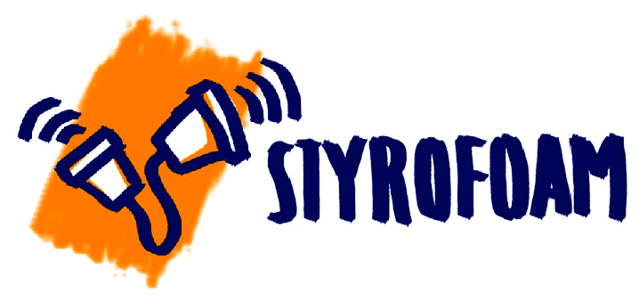

The digital presence of
Instructor: Professor Venkatesh Rajamanickam
Course Duration: 2 weeks
In formal learning environments such as classrooms, learners are too often positioned as passive — listening, watching, attending, consuming — rather than encouraged to engage as creators — designing, making, producing, constructing.
This course includes:
(1) investigate the theoretical foundations of learning by creating, and
(2) explore how to design learning experiences that support creating as a central activity.
We do this by focusing on constructionism, a theory of learning developed by Seymour Papert. Constructionism builds on the constructivist theories of Jean Piaget, asserting that knowledge is not simply transmitted from teacher to student, but actively constructed by the mind of the learner. Papert wrote in 1991:
Constructionism shares constructivism’s connotation of learning as ‘building knowledge structures’ irrespective of the circumstances of the learning. It then adds the idea that this happens especially felicitously in a context where the learner is consciously engaged in constructing a public entity, whether it’s a sand castle on the beach or a theory of the universe.
Professor Venkatesh’s slides on the Instructional Design Process can be found here
The students are expected to read the following carefully selected papers to understand the theoretical foundations that underpin the seminal ideas in the domain of ‘learning by doing’.
“Historical knowledge is no more and no less than carefully and critically constructed collective memory. As such it can both make us wiser in our public choices and more richly human in our private lives.”
—William H. McNeill, Why Study History? (1985)
The first assignment of the course is to design a lesson and associated resources (both for the teacher and the students) for teaching & learning of local history to secondary students.
An important place to start this exercise off is the National Curriculum Framework document of 2005.
A decent summary of the NCF 2005 document is here to get just the gist. The main concern of NCF 2005 was: “Why has education become a burden rather than a source of joy?” It envisions an education, from science and maths to social science and language, where children are given a space to reflect, ask questions, wonder, and probe sources of knowledge outside the textbook.
The social sciences position paper, further recommends that learning of history should enable students to better understand their own world and their own identities. History should help them discover processes of change and continuity in their world, and to compare ways in which power and control were and are exercised. Emphasis is on developing concepts and the ability to analyze socio-political realities rather than on the mere retention of information without comprehension.
A lot of good people have thought very seriously about education in India and yet, we seem to have failed when it comes to delivering the goods on the ground. Part of the problem is, the recommendations paint a broader picture of ‘what’ could be done without telling ‘how’ to do them. Even this detailed CBSE advisory ultimately leaves it to the teacher “who can kindle interest and also create curiosity in children’s minds to critically seek new knowledge and examine what they already know”, to deal with the details of the ‘how’.
A phrase which occurs rather frequently in these documents is contextualizing education. The recommendations of the report are informed by the Kothari Commission which suggested an epistemological shift in reorienting/redesigning the curriculum so as to accommodate the multiple ways of imagining the Indian nation. Along with the national perspective, the local also needs to be creatively balanced. In order to achieve a balance between national and local, it is necessary to incorporate the local perceptions through which the people can relate themselves to the nation. Doing this will also ensure a much deeper and richer understanding of the nation the commission contended.
This assignment is therefore to address the ‘how’ problem. The aim is to make learning history local.
Given the centralized nature of textbook production the content leading to lack of plurality and locality, it is necessary to work towards alternate, more decentralized mechanisms of knowledge-generation in which teachers, students, and the local community feel empowered to bring in their own realities to the content of history. I believe this personal engagement would make history compelling and refreshing for teacher and student alike. It gives students the opportunity to present/re-present history with their own voice (rather than the standardized voice of academia), to make it subjective, to knowingly offer different lenses through which the complex web of history can be viewed.
Furthermore, this approach would encourage ownership through discovery and give the students a sense of engagement and immediacy with the content. The strategies of this class offer the possibility for documenting, investigating and thinking rather than dry historical regurgitation. The idea is not new. British & American schools have long incorporated local history lessons while several universities offer it as a specialized field of study.
The objective of this assignment is to create the first set of teaching & learning materials specific to a locality (Powai, Andheri, Aurangabad and so on) that schools from the locality can use to build a history of their villages, towns or parts of cities. The larger goal is to make this an open-source project where such locally created history lessons across India will be collected through contributions from teachers and history enthusiasts and made available to schools for use in their classroom.
The Task
Create a local history lesson for any secondary class (6th to 10th standard). Your design output should include a set of learning materials (well-chosen primary materials such as maps, images, data, etc., activities such as understanding change through analyzing data, recording and interpreting oral histories, etc., easy templates and formats for documentation/presentation) for the students and teaching resources (lesson plan, teaching notes, etc.) for teachers.
The lesson should be completed in about 2-3 class periods with perhaps an additional half-day on a Saturday for fieldwork. You might want to refer to NCERT history/social studies textbooks for these classes to get a sense of typical length and coverage of chapters.
Some Useful Links
Connecting communities with local history – https://www.historypin.org/en/
World Digital Library – https://www.wdl.org/en/
BBC History Lessons – http://www.bbc.co.uk/guides/ztnvgk7
A History of the World in 100 Objects – http://www.bbc.co.uk/ahistoryoftheworld/about/british-museum-objects/
World History Sources – http://chnm.gmu.edu/worldhistorysources/index.html
Final Output:
The history lesson plans designed by the students can be found here:
Arka Majhi: Hooghly Imambara
Gauri Tillu: Parle G factory, Mumbai
Mayura Datar: Vitthal Mandir, Pune
Naveen Kumar: BEST bus service in Mumbai
Niharika Kapil: Tracing the Past Through Objects
Pratiti Sarkar: Finding the Lost Card: Ganjifa Cards
Rishi Vanukuru: The making of Navi Mumbai
Samanda Pyngrope: Looking at Local History through Folktales: A Khasi Perspective
Shubham Mehta: Golghar Complex, Patna
Srinavya Kondavti: Navy day celebrations in Visakhapatnam
Course Outcomes
Students will use a basic Instructional Design process and relevant models to design and develop podcasts for a given topic.
The design will include:
For the given design, students will also collate the content and convert it into a script. The data collation and the scriptwriting will be two distinct activities. Finally, the script will be produced as a podcast with appropriate recording tools, reasonable production quality and basic embellishments like intro/outro music, etc.
Theme
IDC conducts two national level exams, CEED & UCEED which are the entrance exams for the M. Des and B. Des programs respectively. There is a huge demand from aspiring candidates for authentic knowledge on how to qualify and what to expect in the courses. As IDC neither provides a comprehensive guide nor has the resources to answer the hundreds of queries we get, candidates are forced to resort to information available online. Much of this information is inadequate, is of poor quality or plain spurious.
In this assignment, the students will design a set of podcasts to address this need. As students who have recently gone through the CEED exam, the M. Des studio test & the interview selection process, M.Des 1st year students are in the best position to recognize the needs of potential information seekers and to supply the appropriate information, through a comprehensive, yet an engaging set of podcasts.
The information potentially could be interviews with students, professors, successful candidates, candidates who failed in the first attempt but made it through in the second, etc.; preparation techniques for the portfolio, entrances exam, studio test, and interviews; what to expect in each of the 5 disciplines we offer; perspectives from alumni who graduated from IDC and are placed in different industries and what they thought of their education at IDC; and so on. You will decide the scope of the content, its structure and presentation method.
The content could be a blend of different types of information (domains of knowledge); personal experiences (stories); and inside information (insights). This topic also lends itself nicely to be conceived as one podcast with multiple segments.
Collectively the class will brainstorm on the scope, constituent parts and boundaries of the content, divide it into 5 logical segments, and decide on the 5 pairs of students who would work on them.
Professor Poonam Medh’s slides on designing a podcast can be found here.
Final Output:
Process followed:
The only kind of styrofoam that does not harm the environment!

https://soundcloud.com/thestyrofoampodcast
Reach out to Prof. Venkatesh Rajamanickam for details about projects, future collaboration and internships.